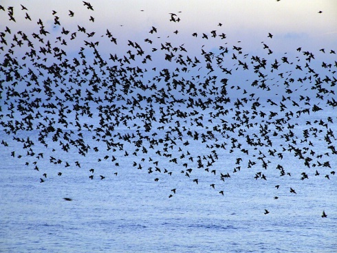

About me
I’m an aspiring flyer who loves everything about the open sky.
I've lived in lots of different places and havedone a lot of flying.
I’m excited to bring my flight experience to the Garden of Peace community.
I’ve been a professional flyer and gardener and
I am a life-long learner who's always interested in expanding my skills.
Aims
I want to master the process of flying the skies and increase my knowledge, skills and abilities in:
- Plane
- Hover
- Swoop
- Dive
- Retrieve

I’d like to work for a flight firm helping clients to better master the skies.